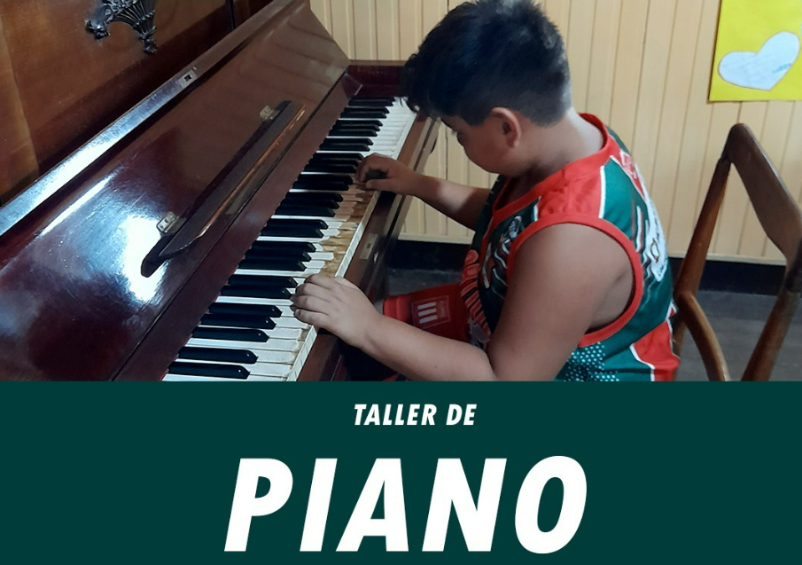
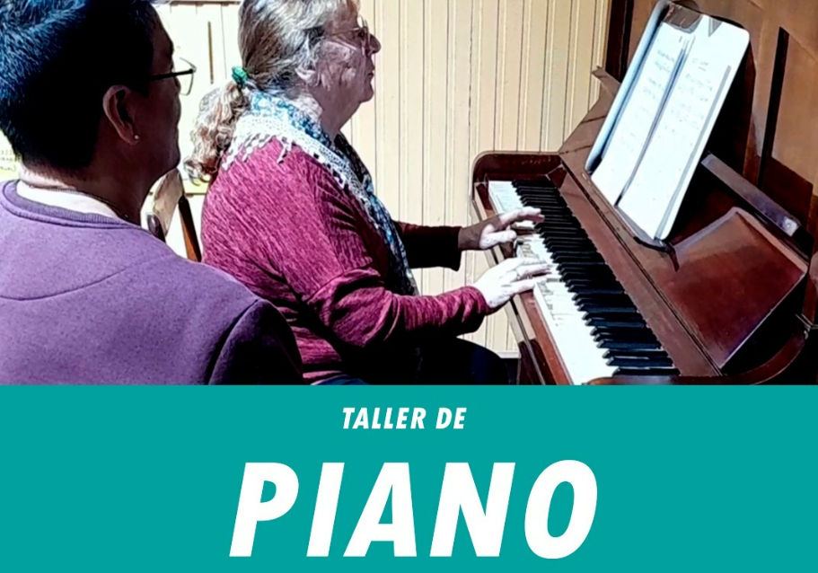

PIANO CON DANTE
Profesor: Dante Gimene
A PARTIR DE 8 AÑOS
Lectura musical; las notas en el teclado; postura y técnica de pianista; métodos y repertorio clásico y popular progresivo! Materiales: Un cuaderno o carpeta con hojas pentagramadas y una birome para escribir.

PIANO CON GABRIEL
Profesor: Gabriel Bravo
A PARTIR DE 11 AÑOS
Técnica pianística e introducción al lenguaje musical. Materiales: Un cuaderno para tomar anotaciones y hojas pentagramadas
